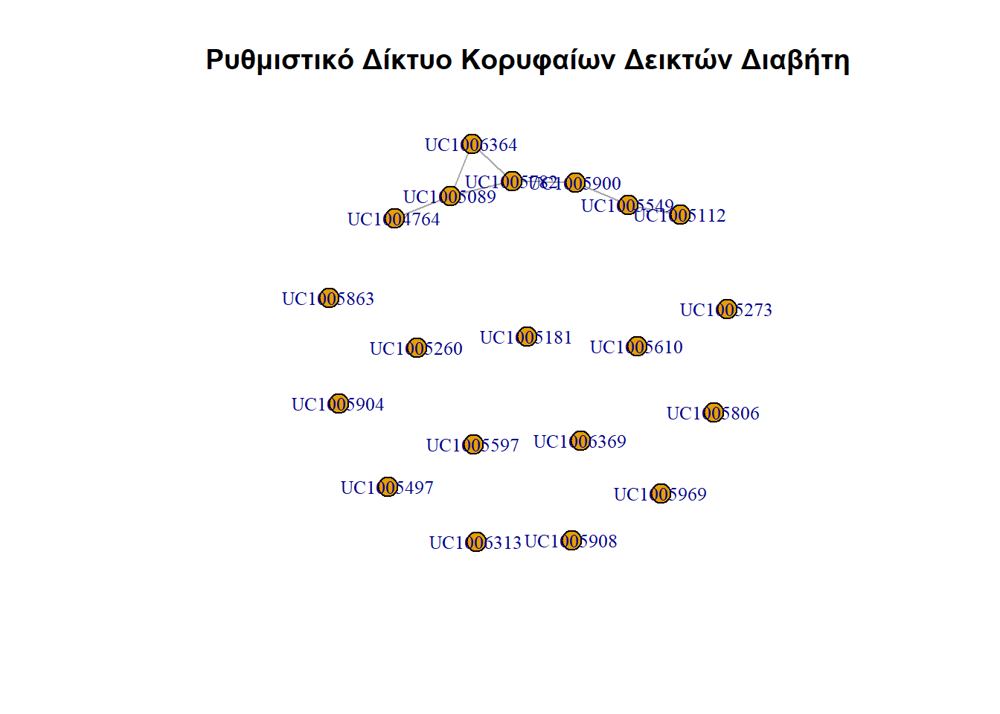

# Καθαρισμός μνήμης R.
rm(list = ls())Ανάλυση Ρυθμιστικών Δικτύων και Πρωτεωμικών Δεικτών στον Σακχαρώδη Διαβήτη Τύπου ΙΙ με χρήση της R
1 Εισαγωγή
Ο Σακχαρώδης Διαβήτης Τύπου ΙΙ είναι μια σύνθετη μεταβολική νόσος. Η κατανόηση των μοριακών μηχανισμών απαιτεί την ανάλυση:
Γενετικών δεικτών: Πολυμορφισμοί (SNPs) και γονιδιακή έκφραση.
Πρωτεωμικών δεικτών: Επίπεδα πρωτεϊνών στο πλάσμα ή στους ιστούς-στόχους (π.χ. πάγκρεας, ήπαρ).
Ρυθμιστικών Δικτύων: Πώς τα γονίδια και οι πρωτεΐνες αλληλεπιδρούν για να ελέγξουν την ινσουλινοαντοχή.
2 Προετοιμασία Περιβάλλοντος
# Εγκατάσταση απαραίτητων πακέτων (BioConductor)
if (!require("BiocManager", quietly = TRUE))
install.packages("BiocManager")Warning: package 'BiocManager' was built under R version 4.5.3Bioconductor version '3.22' is out-of-date; the current release version '3.23'
is available with R version '4.6'; see https://bioconductor.org/install# Βασικά πακέτα για ανάλυση
BiocManager::install(c("limma", "GEOquery", "WGCNA", "biomaRt", "igraph"))Bioconductor version 3.22 (BiocManager 1.30.27), R 4.5.2 (2025-10-31 ucrt)Installing package(s) 'BiocVersion', 'limma', 'GEOquery', 'WGCNA', 'biomaRt',
'igraph'also installing the dependencies 'XVector', 'SparseArray', 'checkmate', 'Biostrings', 'BiocGenerics', 'XML', 'R.oo', 'R.methodsS3', 'MatrixGenerics', 'GenomicRanges', 'IRanges', 'Seqinfo', 'S4Arrays', 'DelayedArray', 'htmlTable', 'RSQLite', 'KEGGREST', 'filelock', 'statmod', 'Biobase', 'rentrez', 'R.utils', 'SummarizedExperiment', 'S4Vectors', 'httr2', 'dynamicTreeCut', 'fastcluster', 'Hmisc', 'impute', 'preprocessCore', 'AnnotationDbi', 'BiocFileCache'package 'XVector' successfully unpacked and MD5 sums checked
package 'SparseArray' successfully unpacked and MD5 sums checked
package 'checkmate' successfully unpacked and MD5 sums checked
package 'Biostrings' successfully unpacked and MD5 sums checked
package 'BiocGenerics' successfully unpacked and MD5 sums checked
package 'XML' successfully unpacked and MD5 sums checked
package 'R.oo' successfully unpacked and MD5 sums checked
package 'R.methodsS3' successfully unpacked and MD5 sums checked
package 'MatrixGenerics' successfully unpacked and MD5 sums checked
package 'GenomicRanges' successfully unpacked and MD5 sums checked
package 'IRanges' successfully unpacked and MD5 sums checked
package 'Seqinfo' successfully unpacked and MD5 sums checked
package 'S4Arrays' successfully unpacked and MD5 sums checked
package 'DelayedArray' successfully unpacked and MD5 sums checked
package 'htmlTable' successfully unpacked and MD5 sums checked
package 'RSQLite' successfully unpacked and MD5 sums checked
package 'KEGGREST' successfully unpacked and MD5 sums checked
package 'filelock' successfully unpacked and MD5 sums checked
package 'statmod' successfully unpacked and MD5 sums checked
package 'Biobase' successfully unpacked and MD5 sums checked
package 'rentrez' successfully unpacked and MD5 sums checked
package 'R.utils' successfully unpacked and MD5 sums checked
package 'SummarizedExperiment' successfully unpacked and MD5 sums checked
package 'S4Vectors' successfully unpacked and MD5 sums checked
package 'httr2' successfully unpacked and MD5 sums checked
package 'dynamicTreeCut' successfully unpacked and MD5 sums checked
package 'fastcluster' successfully unpacked and MD5 sums checked
package 'Hmisc' successfully unpacked and MD5 sums checked
package 'impute' successfully unpacked and MD5 sums checked
package 'preprocessCore' successfully unpacked and MD5 sums checked
package 'AnnotationDbi' successfully unpacked and MD5 sums checked
package 'BiocFileCache' successfully unpacked and MD5 sums checked
package 'BiocVersion' successfully unpacked and MD5 sums checked
package 'limma' successfully unpacked and MD5 sums checked
package 'GEOquery' successfully unpacked and MD5 sums checked
package 'WGCNA' successfully unpacked and MD5 sums checked
package 'biomaRt' successfully unpacked and MD5 sums checked
package 'igraph' successfully unpacked and MD5 sums checked
The downloaded binary packages are in
C:\Users\kkoud\AppData\Local\Temp\RtmpKARllP\downloaded_packagesInstallation paths not writeable, unable to update packages
path: C:/Program Files/R/R-4.5.2/library
packages:
cluster, foreign, lattice, Matrix, mgcv, nlme, rpart, survivalOld packages: 'backports', 'base64enc', 'bit64', 'blob', 'broom', 'bslib',
'car', 'carData', 'circlize', 'cli', 'clock', 'cpp11', 'curl', 'data.table',
'DBI', 'dbplyr', 'dials', 'digest', 'dplyr', 'dtplyr', 'e1071', 'emmeans',
'factoextra', 'FactoMineR', 'fitdistrplus', 'flashClust', 'forecast',
'fracdiff', 'fs', 'furrr', 'future', 'future.apply', 'gap', 'gargle',
'ggplot2', 'ggpubr', 'ggrepel', 'ggsci', 'ggstats', 'GlobalOptions',
'globals', 'glue', 'hardhat', 'highr', 'httpuv', 'httr', 'infer', 'jose',
'knitr', 'later', 'lava', 'lazyeval', 'lhs', 'libcoin', 'lifecycle',
'listenv', 'lme4', 'lmerTest', 'lubridate', 'magrittr', 'markovchain',
'mgsub', 'multcomp', 'multcompView', 'mvtnorm', 'openssl', 'parallelly',
'parsnip', 'pdftools', 'permute', 'plotly', 'png', 'processx', 'prodlim',
'progressr', 'proxy', 'ps', 'purrr', 'ragg', 'ranger', 'rappdirs',
'rbibutils', 'Rcpp', 'RcppArmadillo', 'RcppParallel', 'Rdpack', 'readr',
'recipes', 'reformulas', 'renv', 'reshape2', 'rgl', 'rlang', 'rmarkdown',
'rpart.plot', 'rsample', 'rsconnect', 'rstudioapi', 'S7', 'scatterplot3d',
'selectr', 'sf', 'shiny', 'snowflakeauth', 'sourcetools', 'sparklyr',
'sparsevctrs', 'SQUAREM', 'systemfonts', 'textshaping', 'tibble',
'tidymodels', 'tidyr', 'timechange', 'timeDate', 'tinytex', 'tseries', 'TSP',
'tune', 'units', 'uuid', 'vctrs', 'vegan', 'vip', 'viridisLite', 'vroom',
'warp', 'wk', 'xfun', 'xml2', 'xtable', 'xts', 'yardstick', 'zoo'library(ggplot2)
library(dplyr)
Attaching package: 'dplyr'The following object is masked from 'package:kableExtra':
group_rowsThe following objects are masked from 'package:stats':
filter, lagThe following objects are masked from 'package:base':
intersect, setdiff, setequal, union# Με το πέρας της εργασίας
# Διαγράφεις τα πακέτα ανάλυσης
# remove.packages(c("limma", "GEOquery", "WGCNA", "biomaRt", "igraph"))
# Διαγράφεις και το ίδιο το BiocManager
# remove.packages("BiocManager")3 Απόκτηση Δεδομένων (Data Acquisition)
Για την εργασία σας, μπορείτε να αντλήσετε πραγματικά δεδομένα από τη βάση GEO (Gene Expression Omnibus).
Παράδειγμα κώδικα για λήψη δεδομένων:
library(GEOquery)Loading required package: BiobaseWarning: package 'Biobase' was built under R version 4.5.3Loading required package: BiocGenericsLoading required package: generics
Attaching package: 'generics'The following object is masked from 'package:dplyr':
explainThe following objects are masked from 'package:base':
as.difftime, as.factor, as.ordered, intersect, is.element, setdiff,
setequal, union
Attaching package: 'BiocGenerics'The following object is masked from 'package:dplyr':
combineThe following objects are masked from 'package:stats':
IQR, mad, sd, var, xtabsThe following objects are masked from 'package:base':
anyDuplicated, aperm, append, as.data.frame, basename, cbind,
colnames, dirname, do.call, duplicated, eval, evalq, Filter, Find,
get, grep, grepl, is.unsorted, lapply, Map, mapply, match, mget,
order, paste, pmax, pmax.int, pmin, pmin.int, Position, rank,
rbind, Reduce, rownames, sapply, saveRDS, table, tapply, unique,
unsplit, which.max, which.minWelcome to Bioconductor
Vignettes contain introductory material; view with
'browseVignettes()'. To cite Bioconductor, see
'citation("Biobase")', and for packages 'citation("pkgname")'.Setting options('download.file.method.GEOquery'='auto')Setting options('GEOquery.inmemory.gpl'=FALSE)# Παράδειγμα dataset για Διαβήτη Τύπου ΙΙ (GSE sequence ID - ενδεικτικό)
gse <- getGEO("GSE164448", destdir = ".", getGPL = TRUE)Found 1 file(s)GSE164448_series_matrix.txt.gzdata <- exprs(gse[[1]]) # Πίνακας έκφρασης
metadata <- pData(gse[[1]]) # Δεδομένα ασθενών (Control vs Diabetes)4 Ανάλυση Διαφορικής Έκφρασης (Differential Expression)
Εδώ εντοπίζουμε ποιες πρωτεΐνες ή γονίδια (δείκτες) αλλάζουν σημαντικά στους διαβητικούς.
library(limma)
Attaching package: 'limma'The following object is masked from 'package:BiocGenerics':
plotMA# Δημιουργία design matrix (Ομάδα ελέγχου vs Διαβήτης)
group <- factor(metadata$characteristics_ch1) # Προσαρμόστε ανάλογα με το dataset
design <- model.matrix(~0 + group)
colnames(design) <- c("Control", "Diabetes")
# Γραμμικό μοντέλο
fit <- lmFit(data, design)
contrast.matrix <- makeContrasts(Diabetes - Control, levels = design)
fit2 <- contrasts.fit(fit, contrast.matrix)
fit2 <- eBayes(fit2)
# Εξαγωγή αποτελεσμάτων
top_markers <- topTable(fit2, adjust="BH", sort.by="P", n=50)
head(top_markers) logFC AveExpr t P.Value adj.P.Val B
UC1005549 0.05635341 5.589894 3.437668 0.003153122 0.9976269 -1.652265
UC1005969 0.03960392 5.586783 2.750245 0.013690197 0.9976269 -2.809888
UC1005597 0.04231754 5.571522 2.473842 0.024246485 0.9976269 -3.258239
UC1005112 0.04394031 5.586183 2.454846 0.025202918 0.9976269 -3.288443
UC1005900 0.04107321 5.621793 2.344536 0.031496319 0.9976269 -3.461991
UC1005260 0.04546298 5.574730 2.329601 0.032453578 0.9976269 -3.4852315 Κατασκευή Ρυθμιστικού Δικτύου (Regulatory Networks)
Χρησιμοποιούμε τη μέθοδο WGCNA (Weighted Gene Co-expression Network Analysis) για να δούμε πώς συνδέονται οι δείκτες μεταξύ τους.
# Απλοποιημένη δημιουργία δικτύου με igraph για οπτικοποίηση των top δεικτών
library(igraph)Warning: package 'igraph' was built under R version 4.5.3
Attaching package: 'igraph'The following objects are masked from 'package:BiocGenerics':
normalize, path, unionThe following objects are masked from 'package:generics':
components, unionThe following objects are masked from 'package:dplyr':
as_data_frame, groups, unionThe following objects are masked from 'package:stats':
decompose, spectrumThe following object is masked from 'package:base':
union# Έστω ότι έχουμε έναν πίνακα συσχέτισης των κορυφαίων πρωτεϊνών
cor_matrix <- cor(t(data[rownames(top_markers)[1:20], ]))
diag(cor_matrix) <- 0
cor_matrix[abs(cor_matrix) < 0.7] <- 0 # Κρατάμε μόνο ισχυρές συσχετίσεις
network <- graph_from_adjacency_matrix(cor_matrix, mode = "undirected", weighted = TRUE)
# Σχεδίαση δικτύου
plot(network, vertex.size=10, vertex.label.cex=0.8,
main="Ρυθμιστικό Δίκτυο Κορυφαίων Δεικτών Διαβήτη")Warning: Non-positive edge weight found, ignoring all weights during graph
layout.